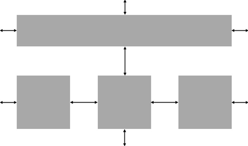
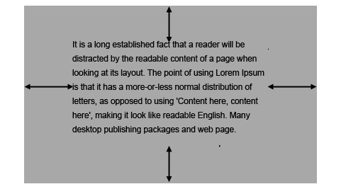
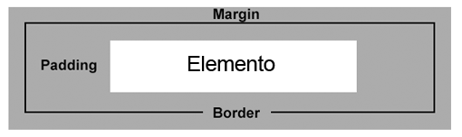

Para desenvolvedores um pouco mais experientes em CSS as propriedades margin e padding não são nem um mistério, entretanto para os que estão dando ainda seus primeiros passos no universo "Front-end", já passa a ser uma dúvida bastante frequente. Vejamos:
A propriedade margin do CSS define as dimensões das margens de um elemento
CSS. Elas compõem as áreas verticais e horizontais entre esses elementos,
onde, caso os elementos não tenham margens em torno deles, eles vão
enconstar uns nos outros.
Vale lembrar que alguns elementos já possuem margens por padrão, ou seja,
mesmo que você não adicione um valor para margem ele já vem inserido, como
é o caso dos elementos de cabeçalhos (h1, h2... h6).
Exemplo:

A propriedade margin em CSS define o espaço exterior entre os elementos. Compreende também o espaçamento entre os elementos e tela do navegador do usuário, por exemplo, o desenvolvedor deseja que um elemento fique a 20px do topo da página do usuário.
As margens podem ser aplicadas nos quatro lados de um elemento HTML. Superior, direita, inferior e esquerda.
A propriedade margin do CSS, assim como algumas outras, aceita a sintaxe abreviada:
Margens iguais nos quatro lados do elemento.
margin: 30px;
Margem superior e inferior de 10px. Margem esquerda e direita de 15px.
margin: 10px 15px;
Margem superior de 5px. Margem direita de 10px. Margem inferior de 15px.
Margem esquerda de 20px;
margin: 5px 10px 15px 20px;
A propriedade do CSS padding define o espaçamento entre o conteúdo e a borda de um elemento HTML. Esta borda por padrão não aparece para o usuário. É a área que delimita um elemento HTML. É o espaço horizontal e vertical em torno da área de conteúdo de um elemento, por exemplo, espaçamento entre as bordas de uma div e o parágrafo contido dentro da mesma.
Exemplo:

Repare que com a propriedade padding conseguimos definir o espaçamento interno do elemento, o que nos possibilita posicionar o texto dentro do elemento.
Assim como na propriedade margin, por aqui também podemos definir espaçamento diretamente para um lado do elemento:
Sendo que:
Espaçamentos iguais nos quatro lados do elemento.
padding: 30px;
Padding superior e inferior de 10px. Padding esquerdo e direito de 15px.
padding: 10px 15px;
Padding superior de 5px. Padding direita de 10px. Padding inferior de
15px. Padding esquerda de 20px;
padding: 5px 10px 15px 20px;
Segue exemplo mais completo:
